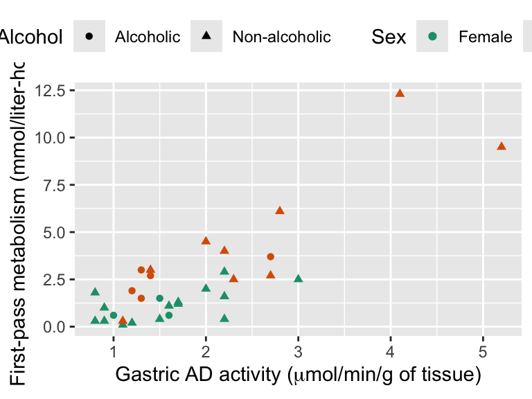
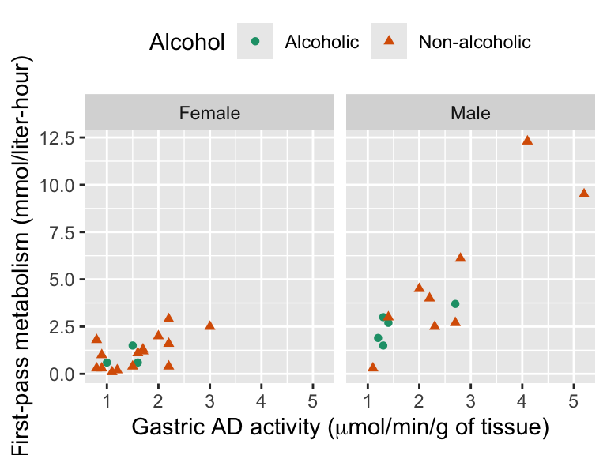
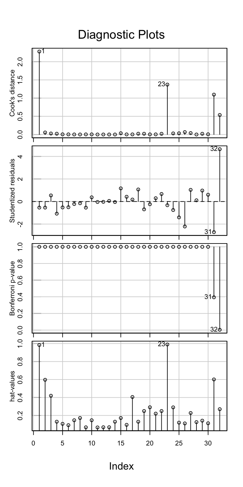
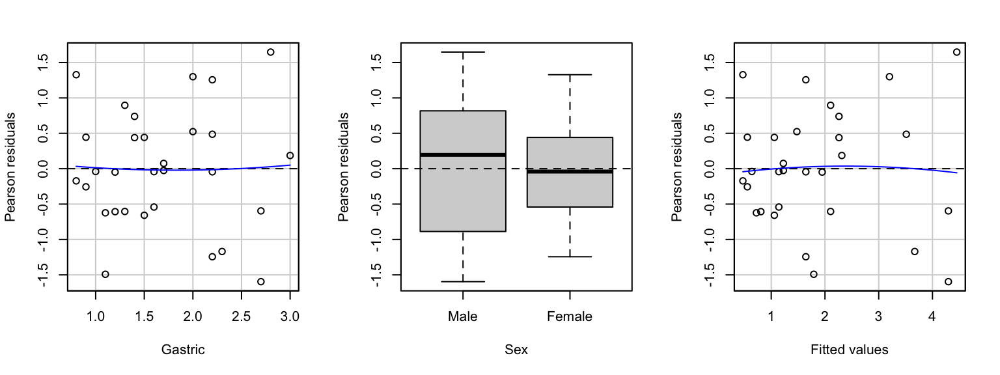
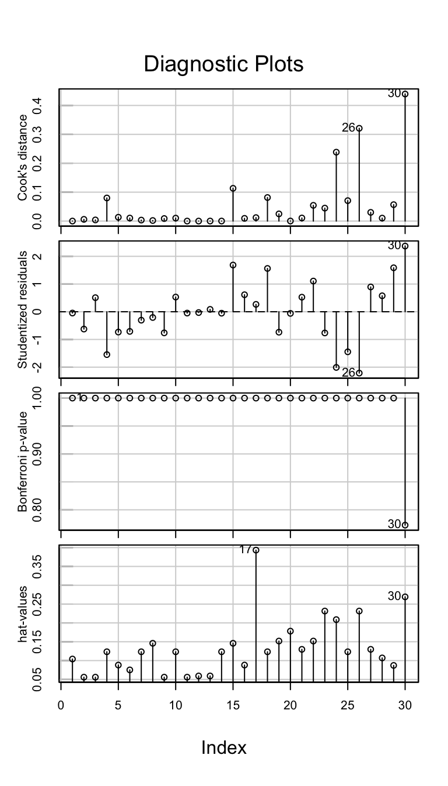
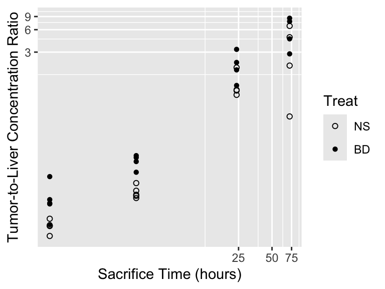
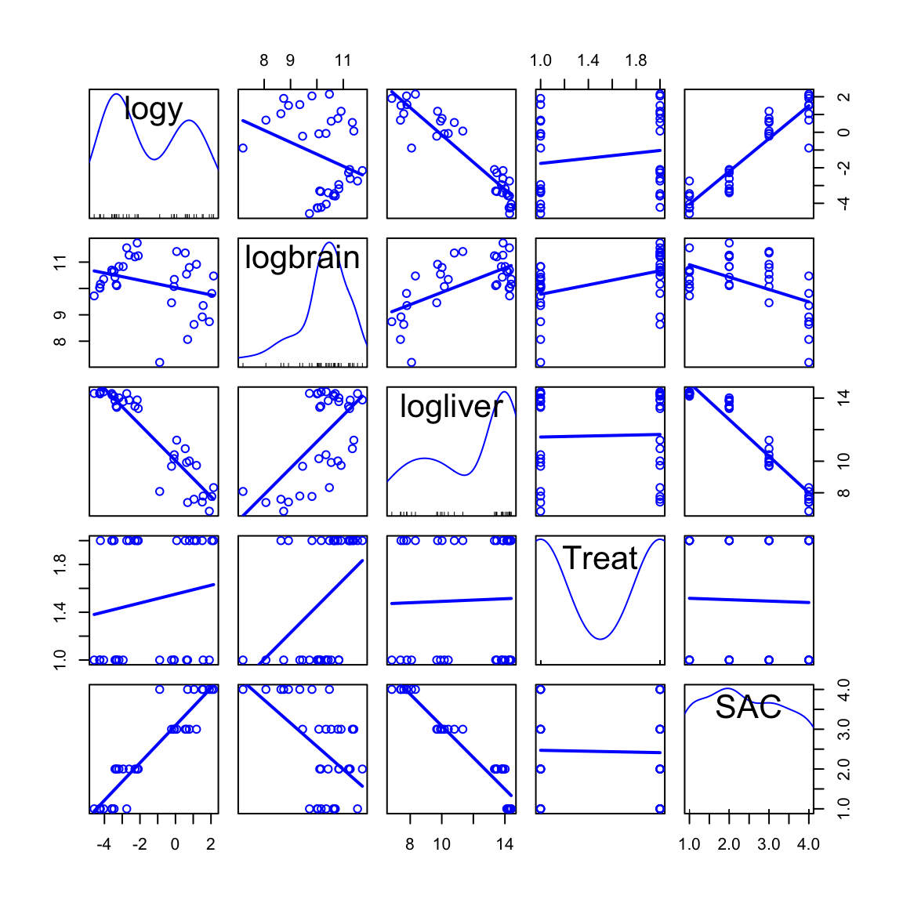
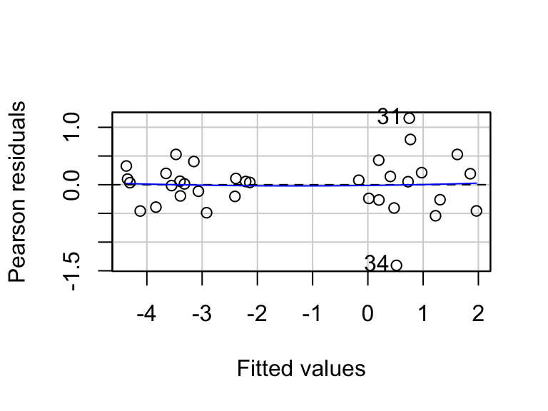
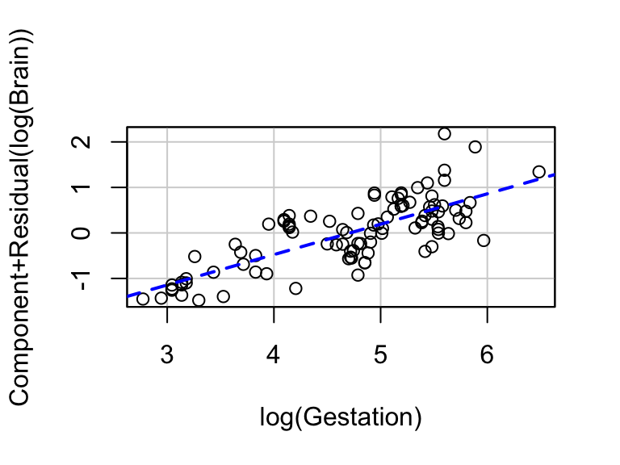

library(ggformula) # graphics
library(Sleuth3) # Sleuth data sets
library(broom) # extract pieces of lm output
library(gridExtra) # arrange multiple plots on a page
library(stargazer) # tables to display/compare models
library(car) # easy diagnostic plots7 Model Checking and Refinement
In this chapter we need to load the following packages (remember, you will need to install packages you have never used before if you are using your own computer).
We will also set some options to improve legibility of graphs and output.
# display four significant digits by default and no significance stars
options(digits = 3, show.signif.stars = FALSE) 8 Alcohol metabolism in men and women
How do men and women metabolize alcohol? This is the question addressed in case study 11.1 in Sleuth.
8.1 Data coding, summary statistics and graphical display
We begin by loading the data and summarizing the variables
summary(case1101) Subject Metabol Gastric Sex Alcohol
Min. : 1.00 Min. : 0.10 Min. :0.80 Female:18 Alcoholic : 8
1st Qu.: 8.75 1st Qu.: 0.60 1st Qu.:1.20 Male :14 Non-alcoholic:24
Median :16.50 Median : 1.70 Median :1.60
Mean :16.50 Mean : 2.42 Mean :1.86
3rd Qu.:24.25 3rd Qu.: 2.92 3rd Qu.:2.20
Max. :32.00 Max. :12.30 Max. :5.20 A total of 32 volunteers were included in this data. There were 18 females and 14 males, as recorded on Display 11.1 (page 311 of the Sleuth).
The following is a version of Display 11.2 (page 312):
gf_point(Metabol ~ Gastric, data = case1101, shape = ~Alcohol, color = ~Sex) %>%
gf_labs(x = expression(paste("Gastric AD activity (", mu, "mol/min/g of tissue)", sep = "")),
y = "First-pass metabolism (mmol/liter-hour)") %>%
gf_refine(scale_color_brewer(palette = "Dark2"), theme(legend.position = "top"))
The above plot uses shape and color to encode different information, which can be harder to read than necessary. A better idea is to use color and shape to encode the same information and to use faceting to introduce another variable:
gf_point(Metabol ~ Gastric | Sex, data = case1101, shape = ~Alcohol, color = ~Alcohol) %>%
gf_labs(x = expression(paste("Gastric AD activity (", mu, "mol/min/g of tissue)", sep = "")),
y = "First-pass metabolism (mmol/liter-hour)") %>%
gf_refine(scale_color_brewer(palette = "Dark2"), theme(legend.position = "top"))
8.2 Multiple regression
Next, we fit the full model (including all pairwise interactions) for estimating metabolism given a subjects gastric AD activity, whether they are alcoholic, and their sex. This first model is summarized on page 321 (Display 11.9). Notice that the baseline levels of Sex and Alcohol are redefined prior to modeling.
case1101 <- case1101 %>%
mutate(Sex = factor(Sex, levels = c("Male", "Female")),
Alcohol = factor(Alcohol, levels = c("Non-alcoholic", "Alcoholic")))
case1_mod1 <- lm(Metabol ~ Gastric * Sex * Alcohol, data = case1101)
tidy(case1_mod1)# A tibble: 8 × 5
term estimate std.error statistic p.value
<chr> <dbl> <dbl> <dbl> <dbl>
1 (Intercept) -1.66 1.00 -1.66 0.110
2 Gastric 2.51 0.343 7.32 0.000000146
3 SexFemale 1.47 1.33 1.10 0.282
4 AlcoholAlcoholic 2.55 1.95 1.31 0.202
5 Gastric:SexFemale -1.67 0.620 -2.70 0.0126
6 Gastric:AlcoholAlcoholic -1.46 1.05 -1.39 0.179
7 SexFemale:AlcoholAlcoholic -2.25 4.39 -0.512 0.613
8 Gastric:SexFemale:AlcoholAlcoholic 1.20 3.00 0.400 0.693 Notice also that the asterisk (*) is used to code interactions in R. When an interaction is specified in this way, R will fit all of the terms involved in the largest interaction. For example, in the above model formula we specified Gastric * Sex * Alcohol which resulted in all of the main effects (Gastric Sex, Alcohol), pairwise interactions (Gastric:Sex, Gastric:Alcohol, and Sex:Alcohol), and the triplet (Gastric:Sex:Alcohol) being included. The above model can be fit using the equivalent “long-hand” formula:
case1_mod1 <- lm(Metabol ~ Gastric + Sex + Alcohol + Gastric * Sex + Sex * Alcohol + Gastric * Alcohol +
Gastric * Sex * Alcohol, data = case1101)
tidy(case1_mod1)# A tibble: 8 × 5
term estimate std.error statistic p.value
<chr> <dbl> <dbl> <dbl> <dbl>
1 (Intercept) -1.66 1.00 -1.66 0.110
2 Gastric 2.51 0.343 7.32 0.000000146
3 SexFemale 1.47 1.33 1.10 0.282
4 AlcoholAlcoholic 2.55 1.95 1.31 0.202
5 Gastric:SexFemale -1.67 0.620 -2.70 0.0126
6 SexFemale:AlcoholAlcoholic -2.25 4.39 -0.512 0.613
7 Gastric:AlcoholAlcoholic -1.46 1.05 -1.39 0.179
8 Gastric:SexFemale:AlcoholAlcoholic 1.20 3.00 0.400 0.693 Having fit the full model, we calculate a number of model diagnostics, including leverage, studentized (i.e. standardized) residuals, and Cook’s distance (pages 325-327).
case1_aug <- augment(case1_mod1)The 31st row of this augmented data frame is shown below:
case1_aug[31,]# A tibble: 1 × 10
Metabol Gastric Sex Alcohol .fitted .resid .hat .sigma .cooksd .std.resid
<dbl> <dbl> <fct> <fct> <dbl> <dbl> <dbl> <dbl> <dbl> <dbl>
1 9.5 5.2 Male Non-alcoholic 11.4 -1.91 0.601 1.11 1.10 -2.41Note that in this augmented data frame leverage is called .hat, studentized (standardized) residuals are called .std.resid, and Cook’s distances are called .cooksd.
It is often easier to digest these values visually. The infIndexPlot() command in the car package allows us to do this just as in Display 11.12 (page 327):
infIndexPlot(case1_mod1)
Note: the “Bonferroni p-value” panel in the plot is displaying the results for a test of outlierhood.
As pointed out in Sleuth, cases 31 and 32 have substantially larger studentized residuals than the other observations. Interestingly, observations 1 and 23 stand out more than 31 and 32 in our version of the index plots.
The authors of Sleuth refit the model without observations 31 and 32.
case1_mod2 <- lm(Metabol ~ Gastric + Sex + Alcohol + Gastric * Sex + Sex * Alcohol + Gastric * Alcohol + Gastric * Sex * Alcohol, data = case1101, subset = -c(31, 32))A table comparing the model coefficients with and without cases 21 and 32 is shown below:
8.3 Refining the Model
This section addresses the process of refining the model. First, we use an extra-sums-of-square F-test to determine whether the terms involving alcoholism can be removed from the full model, as shown in Display 11.13 (page 329).
case1_mod3 <- lm(Metabol ~ Gastric * Sex, data = case1101, subset = -c(31, 32))
anova(case1_mod3, case1_mod2)Analysis of Variance Table
Model 1: Metabol ~ Gastric * Sex
Model 2: Metabol ~ Gastric + Sex + Alcohol + Gastric * Sex + Sex * Alcohol +
Gastric * Alcohol + Gastric * Sex * Alcohol
Res.Df RSS Df Sum of Sq F Pr(>F)
1 26 20.2
2 22 19.5 4 0.74 0.21 0.93As noted in Sleuth there is no evidence of an alcoholism effect, so we can utilize the smaller model. There are no issue revealed by inspection of the residual plots. Further, revisiting the case influence diagnostics, we now see that no observations stand out. (Note: the issues with cases 1 and 23 previously seen were due to the fact that there were so few alcoholics in the data set, so it was “easy” for points to be potentially influential due to data sparsity.)
residualPlots(case1_mod3, layout = c(1,3), tests = FALSE)
infIndexPlot(case1_mod3)
Next, we assess a model without an intercept, which is scientifically plausible and summarized in Display 11.14 (page 329).
case1_mod4 <- lm(Metabol ~ Gastric + Gastric:Sex - 1, data = case1101, subset = -c(31, 32))
tidy(case1_mod4)# A tibble: 3 × 5
term estimate std.error statistic p.value
<chr> <dbl> <dbl> <dbl> <dbl>
1 Gastric 0.726 0.121 5.99 0.00000187
2 Gastric:SexMale 0.873 0.174 5.02 0.0000263
3 Gastric:SexFemale NA NA NA NA anova(case1_mod4, case1_mod3)Analysis of Variance Table
Model 1: Metabol ~ Gastric + Gastric:Sex - 1
Model 2: Metabol ~ Gastric * Sex
Res.Df RSS Df Sum of Sq F Pr(>F)
1 28 20.3
2 26 20.2 2 0.094 0.06 0.94Note that the “Summary of Statistical Findings” section (page 312) is based on this final model.
9 Blood brain barrier
Neuroscientists working to better understand the blood brain barrier have infused rats with cells to induce brain tumors. This is the topic addressed in case study 11.2 in the Sleuth.
9.1 Data coding and summary statistics
We begin by loading the data, performing transformations where needed, and summarizing the variables.
names(case1102)[1] "Brain" "Liver" "Time" "Treatment" "Days" "Sex" "Weight"
[8] "Loss" "Tumor" case1102 <- case1102 %>%
mutate(Y = Brain/Liver,
SAC = as.factor(Time),
logliver = log(Liver),
logbrain = log(Brain),
logy = log(Brain/Liver),
logtime = log(Time),
Sex = relevel(Sex, ref = "Male"),
Treat = relevel(Treatment, ref = "NS")) # make "NS" referenec level
summary(case1102) Brain Liver Time Treatment Days Sex
Min. : 1334 Min. : 928 Min. : 0.50 BD:17 Min. : 9 Male : 8
1st Qu.: 19281 1st Qu.: 16210 1st Qu.: 1.12 NS:17 1st Qu.:10 Female:26
Median : 32572 Median : 643965 Median : 3.00 Median :10
Mean : 39965 Mean : 668776 Mean :23.51 Mean :10
3rd Qu.: 50654 3rd Qu.:1318557 3rd Qu.:24.00 3rd Qu.:10
Max. :123730 Max. :1790863 Max. :72.00 Max. :11
Weight Loss Tumor Y SAC logliver
Min. :184 Min. :-4.90 Min. : 25 Min. :0.0103 0.5:9 Min. : 6.83
1st Qu.:225 1st Qu.: 1.20 1st Qu.:136 1st Qu.:0.0337 3 :9 1st Qu.: 9.69
Median :240 Median : 3.95 Median :166 Median :0.1193 24 :8 Median :13.37
Mean :242 Mean : 3.64 Mean :183 Mean :1.5036 72 :8 Mean :11.61
3rd Qu.:259 3rd Qu.: 5.97 3rd Qu.:223 3rd Qu.:1.9516 3rd Qu.:14.09
Max. :298 Max. :12.80 Max. :484 Max. :8.5454 Max. :14.40
logbrain logy logtime Treat
Min. : 7.20 Min. :-4.578 Min. :-0.693 NS:17
1st Qu.: 9.86 1st Qu.:-3.390 1st Qu.:-0.245 BD:17
Median :10.39 Median :-2.126 Median : 1.099
Mean :10.23 Mean :-1.389 Mean : 1.861
3rd Qu.:10.83 3rd Qu.: 0.668 3rd Qu.: 3.178
Max. :11.73 Max. : 2.145 Max. : 4.277 A total of 34 rats were included in this experiment. Each rat was given either the barrier solution (\(n = 17\)) or a normal saline solution (\(n = 17\)). Then variables of interest were calculated and are displayed in Display 11.4 (page 314 of the Sleuth).
9.2 Graphical presentation
A scatterplot of log ratio (Y) as a function of log time, as shown in Display 11.5 on page 315, is shown below.
gf_point(Y ~ Time, data = case1102, shape = ~Treat) %>%
gf_refine(coord_trans(x = "log10", y="log10"),
scale_shape_manual(values = c(1, 16))) %>% # 1 = hollow, 16 = filled
gf_labs(x = "Sacrifice Time (hours)", y = "Tumor-to-Liver Concentration Ratio")
We can also graphically explore relationships between the variables using a scatterplot matrix.
scatterplotMatrix(~ logy + logbrain + logliver + Treat + SAC, smooth = FALSE , data = case1102)
9.3 Multiple regression
First, we fit the model proposed on page 317.
case2_mod1 <- lm(logy ~ SAC * Treat + Days + Sex + Weight + Loss + Tumor, data = case1102)
tidy(case2_mod1)# A tibble: 13 × 5
term estimate std.error statistic p.value
<chr> <dbl> <dbl> <dbl> <dbl>
1 (Intercept) -3.84 3.37 -1.14 2.68e- 1
2 SAC3 1.02 0.400 2.54 1.90e- 2
3 SAC24 4.34 0.478 9.08 1.03e- 8
4 SAC72 5.01 0.455 11.0 3.48e-10
5 TreatBD 0.796 0.379 2.10 4.79e- 2
6 Days -0.0370 0.296 -0.125 9.02e- 1
7 SexFemale -0.00130 0.373 -0.00347 9.97e- 1
8 Weight -0.000558 0.00533 -0.105 9.18e- 1
9 Loss -0.0595 0.0304 -1.96 6.37e- 2
10 Tumor 0.00155 0.00123 1.26 2.20e- 1
11 SAC3:TreatBD 0.180 0.552 0.326 7.48e- 1
12 SAC24:TreatBD -0.386 0.585 -0.659 5.17e- 1
13 SAC72:TreatBD 0.379 0.569 0.666 5.13e- 1We can then display a residual plot to assess the fit of the above model. This is provided in Display 11.6 (page 318). Note that id.n prints the row numbers for the n largest residuals.
residualPlot(case2_mod1, id = list(n = 2))
Next, we can use partial residual plots to examine the effects of the covariates (Sex and Days) after the design variables (sacrifice time and treatment) have been accounted for. To do this it is tempting to use partial residual plots, however, as defined in Sleuth, partial residuals cannot be calculated for terms involved in interactions, since it is impossible to isolate the effect of the term after accounting for the others (namely, the term(s) involved in the interaction(s)). To reproduce Display 11.16, we would need to determine exactly what the author’s calculated. (My guess is that they fit the model without interactions if they followed their own definition.) See the last section of this packet for a reproduction of Display 11.15.
9.4 Refining the model
Finally, we fit a refined model. These results can be found in Display 11.17 (page 334).
case2_mod2 <- lm(logy ~ SAC + Treat, data = case1102)
tidy(case2_mod2)# A tibble: 5 × 5
term estimate std.error statistic p.value
<chr> <dbl> <dbl> <dbl> <dbl>
1 (Intercept) -4.30 0.205 -21.0 4.30e-19
2 SAC3 1.13 0.252 4.50 1.01e- 4
3 SAC24 4.26 0.259 16.4 3.13e-16
4 SAC72 5.15 0.259 19.9 1.90e-18
5 TreatBD 0.797 0.183 4.35 1.55e- 4anova(case2_mod2, case2_mod1)Analysis of Variance Table
Model 1: logy ~ SAC + Treat
Model 2: logy ~ SAC * Treat + Days + Sex + Weight + Loss + Tumor
Res.Df RSS Df Sum of Sq F Pr(>F)
1 29 8.23
2 21 6.68 8 1.55 0.61 0.7610 Partial residual plots
To show the capabilities of crPlot(), consider the log brain weight vs. log gestation example that was revisited on pages 330-331. The partial residual plot from Display 11.15 is created by the code below.
lgest_mod <- lm(log(Brain) ~ log(Body) + log(Gestation), data = case0902)
crPlot(lgest_mod, variable = "log(Gestation)", smooth = FALSE)
As mentioned in Sleuth, the partial residual plot reveals that there is still a linear association between log brain weight and log gestation after account for the effect of log body weight.